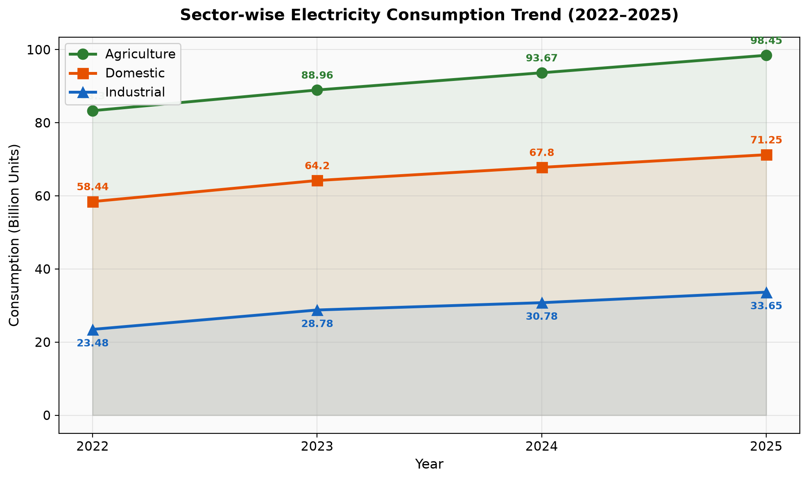
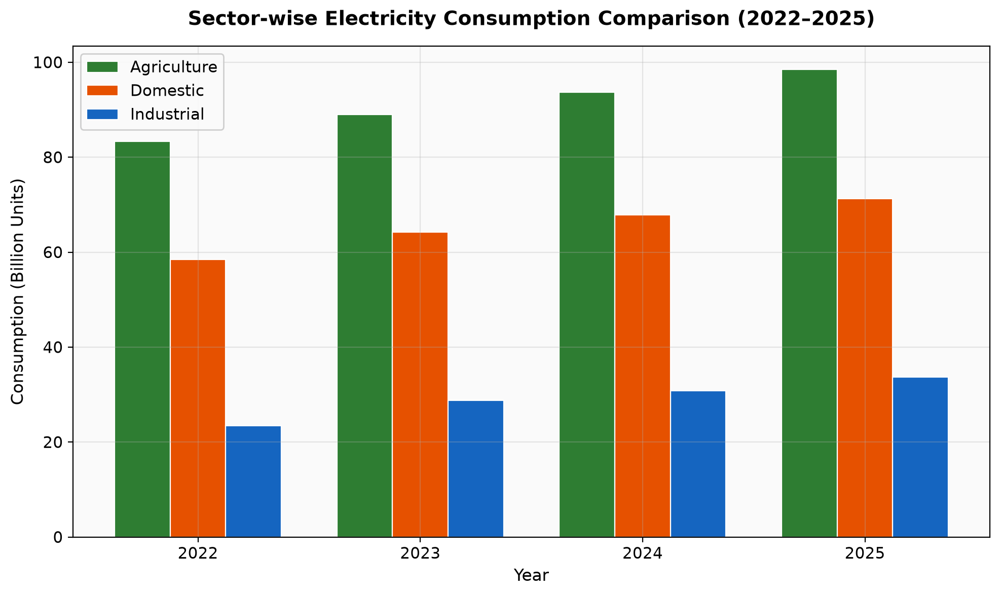
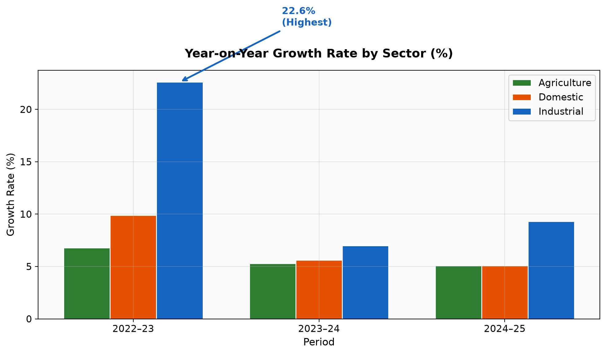
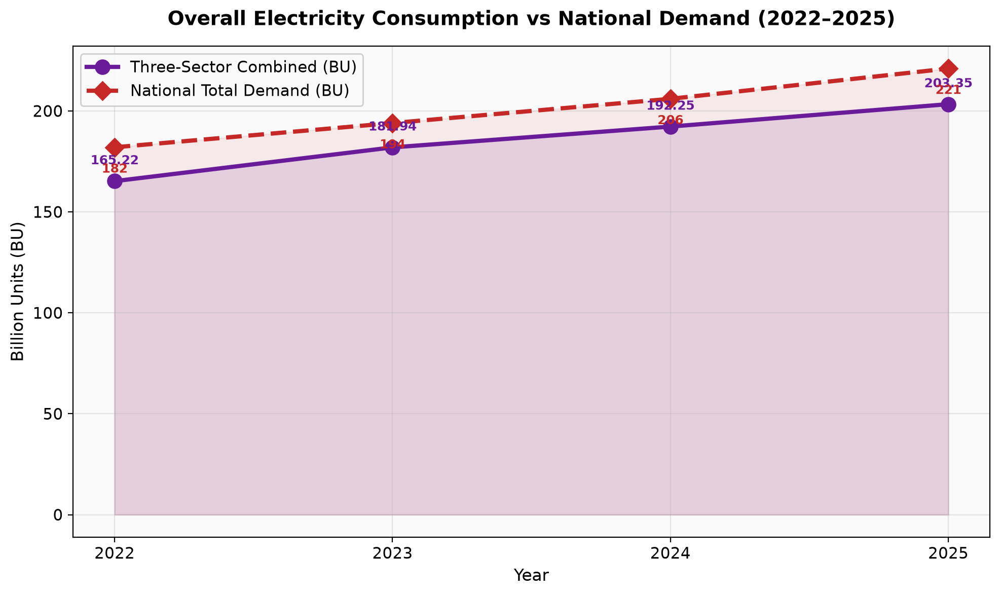
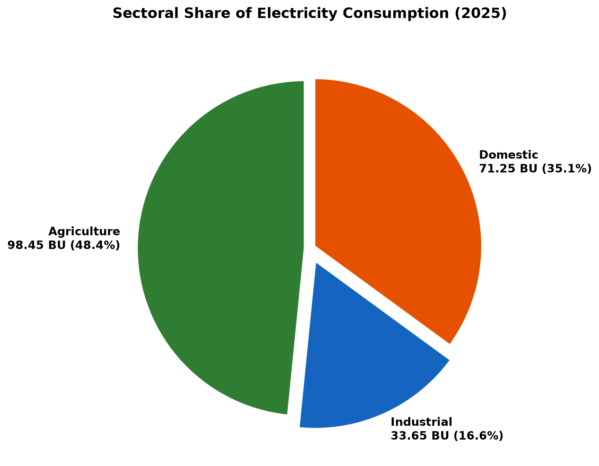
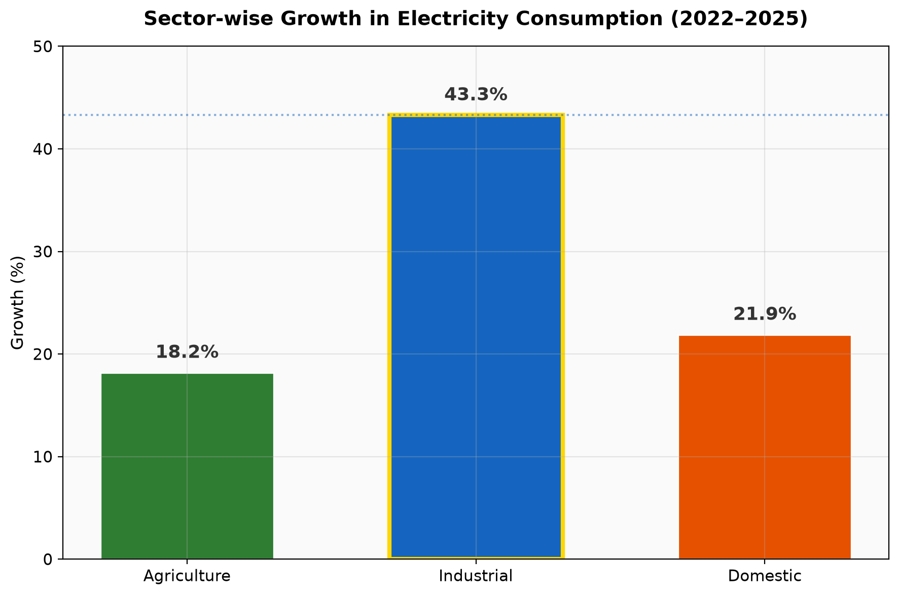

To: The Chairman, Energy Development and Conservation Council (EDCC), New Delhi
From: Jaya
Subject: Electricity Consumption Trends and Highest Growth Sector Analysis (2022–2025)
Electricity consumption in India has increased steadily across all three major sectors between 2022 and 2025. The data provided in Table 1 shows that agriculture, industrial, and domestic sectors recorded higher consumption in each year without any decline. This indicates a continuous rise in electricity use and growing pressure on the country's power infrastructure.
| Sector | 2022 | 2023 | 2024 | 2025 |
|---|---|---|---|---|
| Agriculture | 83.30 | 88.96 | 93.67 | 98.45 |
| Industrial | 23.48 | 28.78 | 30.78 | 33.65 |
| Domestic | 58.44 | 64.20 | 67.80 | 71.25 |
Figure 1: Sector-wise Electricity Consumption Trend (2022–2025)
Figure 1: Sector-wise Electricity Consumption Trend (2022–2025)

Figure 2: Sector-wise Consumption Comparison by Year
Figure 2: Sector-wise Consumption Comparison by Year

Agriculture Sector
Agriculture is the largest consumer of electricity among the three sectors. Its consumption increased from 83.30 BU in 2022 to 98.45 BU in 2025, showing an absolute increase of 15.15 BU and a growth rate of 18.2%. In 2025, agriculture accounted for 48.4% of the total consumption of all three sectors.
The year-on-year growth rates were:
Although the percentage growth is moderate, agriculture adds a large volume of consumption every year because of its high base. This makes it an important sector for electricity planning.
Domestic Sector
Domestic electricity consumption increased from 58.44 BU in 2022 to 71.25 BU in 2025. This is an increase of 12.81 BU, or 21.9%. It is the second-largest consuming sector and contributed 35.1% of the combined total in 2025.
The highest growth was recorded in 2022–23 at 9.9%, while growth in the next two years remained around 5%. The steady increase in domestic consumption can be linked to rapid urbanisation and higher use of electrical appliances such as air conditioners, as mentioned in the additional information provided to the Council.
Industrial Sector
Industrial consumption was the lowest in absolute terms but showed strong growth during the period. It rose from 23.48 BU in 2022 to 33.65 BU in 2025, registering an increase of 10.17 BU (43.3%).
Important points:
In 2022, industrial consumption was about 40% of domestic consumption. By 2025, this ratio increased to 47.2%, showing that industrial demand is rising at a faster pace.
| Sector | 2022–23 | 2023–24 | 2024–25 |
|---|---|---|---|
| Agriculture | 6.8% | 5.3% | 5.1% |
| Industrial | 22.6% | 7.0% | 9.3% |
| Domestic | 9.9% | 5.6% | 5.1% |
From the above table, it can be observed that agriculture and domestic sectors show stable growth, while the industrial sector recorded the highest growth rate, especially in 2022–23.
Figure 3: Year-on-Year Growth Rate by Sector (%)
Figure 3: Year-on-Year Growth Rate by Sector (%)

When the consumption of all three sectors is added together, the following trend is observed:
| Year | Combined Consumption (BU) | Annual Increase (BU) | Year-on-Year Growth (%) |
|---|---|---|---|
| 2022 | 165.22 | — | — |
| 2023 | 181.94 | +16.72 | 10.1% |
| 2024 | 192.25 | +10.31 | 5.7% |
| 2025 | 203.35 | +11.10 | 5.8% |
The combined consumption increased from 165.22 BU in 2022 to 203.35 BU in 2025. The total increase over four years was 38.13 BU, which represents a cumulative growth of 23.1%. The average compound annual growth rate (CAGR) works out to approximately 7.1%.
The highest annual increase was seen in 2022–23, when consumption rose by 16.72 BU. This was mainly due to the sharp rise in industrial consumption during that year.
The combined sector consumption can also be compared with the national total demand given in Table 2:
| Year | Three-Sector Consumption (BU) | National Total Demand (BU) |
|---|---|---|
| 2022 | 165.22 | 182 |
| 2023 | 181.94 | 194 |
| 2024 | 192.25 | 206 |
| 2025 | 203.35 | 221 |
National demand increased from 182 BU to 221 BU, which is a growth of 21.4%. This is close to the 23.1% growth recorded in the three sectors. This shows that agriculture, industrial, and domestic sectors are major contributors to the overall rise in electricity demand in the country.
Figure 4: Overall Electricity Consumption vs National Demand (2022–2025)
Figure 4: Overall Electricity Consumption vs National Demand (2022–2025)

Figure 5: Sectoral Share of Electricity Consumption (2025)
Figure 5: Sectoral Share of Electricity Consumption (2025)

Based on the data from 2022 to 2025, the following observations can be made:
1. Electricity consumption increased in all three sectors every year.
2. Agriculture remains the largest consumer in terms of volume.
3. Industrial consumption is growing faster than the other two sectors in percentage terms.
4. Domestic consumption is also rising steadily due to urbanisation and higher appliance use.
5. The combined growth of 23.1% confirms that electricity demand is rising continuously and will continue to put pressure on power infrastructure.
These findings support the Chairman's concern regarding the steady increase in electricity consumption and the need for better energy planning.
After comparing the consumption data of all three sectors from 2022 to 2025, it is clear that the industrial sector recorded the highest growth in electricity consumption.
| Measure | Agriculture | Industrial | Domestic |
|---|---|---|---|
| Consumption in 2022 (BU) | 83.30 | 23.48 | 58.44 |
| Consumption in 2025 (BU) | 98.45 | 33.65 | 71.25 |
| Absolute Growth (BU) | +15.15 | +10.17 | +12.81 |
| Percentage Growth (%) | 18.2% | **43.3%** | 21.9% |
| CAGR (%) | 5.8% | **12.7%** | 6.7% |
| Highest Single-Year Growth | 6.8% | **22.6%** | 9.9% |
Therefore, in terms of growth rate, the industrial sector is the dominant sector during 2022–2025.
Figure 6: Sector-wise Growth in Electricity Consumption (2022–2025)
Figure 6: Sector-wise Growth in Electricity Consumption (2022–2025)

| Indicator | 2022 | 2025 |
|---|---|---|
| Industrial consumption (BU) | 23.48 | 33.65 |
| Industrial as % of domestic consumption | 40.2% | 47.2% |
| Industrial share of total consumption | 14.2% | 16.6% |
The above data shows that the share of industrial consumption is gradually increasing. If this trend continues, industrial demand may become comparable to domestic demand in the coming years. This will have implications for power supply planning and tariff policy.
The additional information provided to the Council mentions the main reasons for rising electricity demand in India. These reasons can be applied to explain the growth in each sector.
1. Industrial Expansion
The additional information states that electricity demand has increased due to industrial expansion. As industries expand their production and operations, their electricity requirement also increases. This is clearly reflected in the data, where industrial consumption rose sharply by 22.6% in 2022–23 and continued to grow in the following years.
2. Continuous Year-on-Year Increase
Industrial consumption increased every year during the study period:
This shows that industrial growth is not temporary but a continuing trend.
3. Contribution to Peak Demand
The additional information also mentions that peak electricity demand has grown substantially due to industry, along with cooling demand and agriculture. Unlike agricultural demand, which is seasonal, industrial demand creates pressure on the power system throughout the year.
1. Increased Agricultural Irrigation
The briefing identifies increased agricultural irrigation as a key reason for rising electricity demand. Greater use of electric pumps for irrigation has contributed to the increase in agricultural consumption from 83.30 BU to 98.45 BU.
2. Large Consumption Base
Agriculture added the highest absolute amount of consumption (15.15 BU) because it already had the largest share. Even a 5–7% annual increase on this base results in a significant rise in total consumption.
3. Role in Peak Demand
Agriculture is one of the factors responsible for peak electricity demand, especially during irrigation seasons when it coincides with summer cooling requirements.
1. Rapid Urbanisation
More people shifting to urban areas leads to higher household electricity use. This has contributed to the rise in domestic consumption from 58.44 BU to 71.25 BU.
2. Higher Use of Air Conditioners
The additional information specifically mentions higher use of air conditioners as a reason for increased electricity demand. This directly affects the domestic sector, especially during summer months when cooling demand is high.
3. Steady Growth Pattern
Domestic consumption grew by 9.9%, 5.6%, and 5.1% in the three consecutive periods. This shows consistent growth without major fluctuations.
| Sector | Growth (2022–2025) | Main Drivers |
|---|---|---|
| Industrial | 43.3% | Industrial expansion; contribution to peak demand |
| Agriculture | 18.2% | Increased agricultural irrigation; large consumption base |
| Domestic | 21.9% | Rapid urbanisation; higher use of air conditioners |
The analysis of electricity consumption data from 2022 to 2025 leads to the following conclusions:
1. Electricity consumption increased in all three sectors during every year of the study period.
2. Combined consumption grew from 165.22 BU to 203.35 BU, registering a total growth of 23.1%.
3. Agriculture is the largest consumer of electricity, with 98.45 BU in 2025.
4. The industrial sector recorded the highest growth rate of 43.3%, mainly due to industrial expansion.
5. Domestic consumption grew by 21.9%, supported by urbanisation and increased use of air conditioners.
6. All three sectors contribute to the rise in peak electricity demand along with cooling requirements.
These findings confirm the need for effective energy planning and sustainable electricity management, as highlighted by the Chairman of the Council.
End of Jaya's Section | Pages 2 & 3